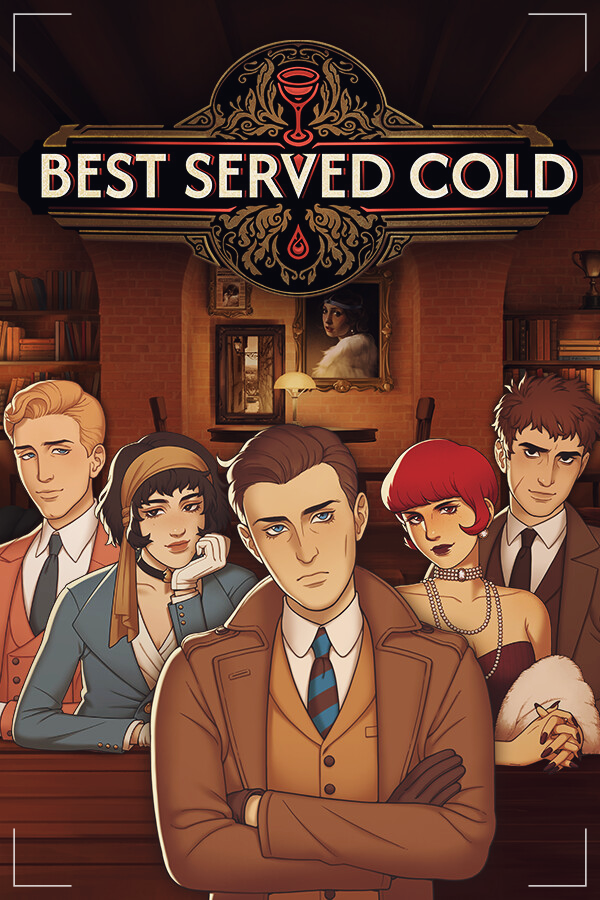

Best Served Cold
Every archived year-end list appearance, including placement and points earned.
About the Game
In an alternate history Europe, “The Nightcap” is the last speakeasy in town, and you’re pouring the drinks… while your customers spill their secrets. Mix and serve cocktails with a twist, as you become a detective while trying to save your bar. Listen to your clienteles’ stories and learn about their lives as you unravel a mystery that touches every layer of Bukovie society, from the drunken dandies splashing cash on cocktails, to the crooked cops and seedy lowlifes who try to rope you into their shady schemes. A good bartender knows the art of conversation is just as important as the ability to pour libations, so listen carefully and keep your wits about you as you delight, charm or even threaten your patrons to get the information you need. With a cast of 22 unique and engaging characters it’s up to you to choose who you can trust, who will have your back… and who will stab you in it! Over the course of five cases, you’ll have to explore every clue and question every suspect to save lives… and save your business. It’s time to flip that sign to open, turn up the jazz and welcome your first customers of the night. Bukovie may be a city in strife, with labour strikes, rationing, unrest and the shadow of war looming, but instead of cowering in fear, the citizens flock to dance halls and speakeasies. Crumbling grandeur might inspire melancholy, but that’s nothing a stiff drink won’t cure. In a world of dwindling light, your speakeasy is a bonfire in the night. Though the city may soon burn, cocktails are always… Best Served Cold.
| Released | 2025-05-05 |
|---|---|
| Developer | Rogueside |
| Publisher | Rogueside |
| Genres | Adventure, RPG, Simulation, Casual, Indie |
| Platforms | macOS, PC |
SingleplayerSteam AchievementsFull controller supportSteam CloudAtmosphericRPGStory RichFantasyChoices MatterVisual NovelRelaxingDetective
Where to Buy
Game information provided by RAWG.
Points by Year
List History
| Year | Source | List | Placement | Points |
|---|---|---|---|---|
| 2025 | NPR | The best games of 2025, picked by NPR's staff | Unranked | 1 |